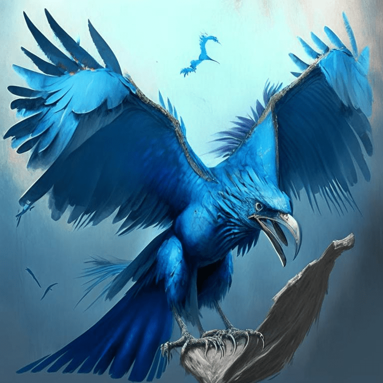

Скайтелон - это большое птицеподобное животное с ярко-синей окраской и острыми зубами, живущее на горных вершинах высоко в атмосфере планеты. Он может летать на высоте до 30 000 метров, благодаря своим мощным крыльям и сверхлегкой кости. Его клюв имеет форму гарпуна, что позволяет ему легко поймать и убивать свою добычу. Он питается маленькими млекопитающими и рыбой, которые обитают на горных вершинах, а также древесными корнями и травами. Скайтелон является довольно редким видом, который обнаружили только на отдаленных островаx, недоступных для человека.
